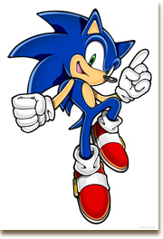
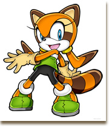
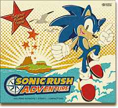
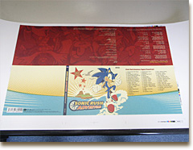
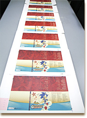

みなさんこんにちは！サウンドの大谷です。
今週からサウンド試聴のコーナーが公開になりましたね。
まだ、『ソニック ラッシュ アドベンチャー』の音楽に触れた事のない方は是非聴いてみて下さい！
というわけで、第２回目はアートワーク編です。
ぶっちゃけサウンドトラックを作る時、一番楽しみな行程でもあります。
今作は内蔵音源で制作された楽曲を収録したサントラということもあり、僕的に、パッケージは手作り感のある紙ジャケにしたい！！という野望がありまして…。
とはいえ、紙ジャケといってもたくさんの種類があるので、参考にいろんなCDを見たり、今回の文字量なども考慮し検討した結果、３つ折りのデジパックという仕様で行くことに決めました。
表面の質感をマットな感じに仕上げるコーティングなんかもこの時点で決めています。
手に持って曲目や歌詞を読むので、触り心地も重要ですよね。
デザインに関しては、ソニックやマリン、ブレイズといったキャラクターのオリジナル素材から、タイトルロゴ、背景、カモメなどの素材を使いながら、紙っぽい質感にもマッチする、ゲームのパッケージとは若干違ったテイストに仕上げることに決めました。


途中経過のバージョンです。
最終版と違うところが２ヶ所ほどあります。
デザイナーさんにはまず表１（パッケージの表紙）を作ってもらい全体の方向性を決めた後内側の面や盤面のデザインを進めてもらいます。
細かいやりとりを何度も重ねながらデザインを詰めていきます。

色校はこんなの
曲目や歌詞、スタッフクレジットなどのテキストに間違いや漏れがないか入念にチェックを重ね問題がないことを確認したら、入稿データを用意してもらいます。
制作したデザインデータを実際に印刷してみると、どのような色になるか確認するため、印刷会社からは色校なるものが届きます。

写真ではわかりにくいですが、全て色が違います。
今回は紙質や表面のコートの影響もあり、なかなか望むような色調に落ち着かず、 色校を何度もやりなおしてもらいました。
デザインから印刷まで、こだわった甲斐あってかなりいい感じに仕上がって、とても満足しています。
表面は楽しく明るい感じで中面はガラッと違う雰囲気になっているところが、いいアクセントになってると思います。
最近は、iTunesStoreなどでデータで音楽を買えちゃう時代なわけですが、そうなってくると、パッケージとして持っている意味をますます考えるようになりました。
単純に音楽を楽しむだけならデータでもいいわけだし、それでもやっぱり物として持つからには、持ってて嬉しいデザインにしたいよねってことで、今後もCDの仕様やデザインには可能な限りこだわっていきたいです。
次回はマスタリング編です。